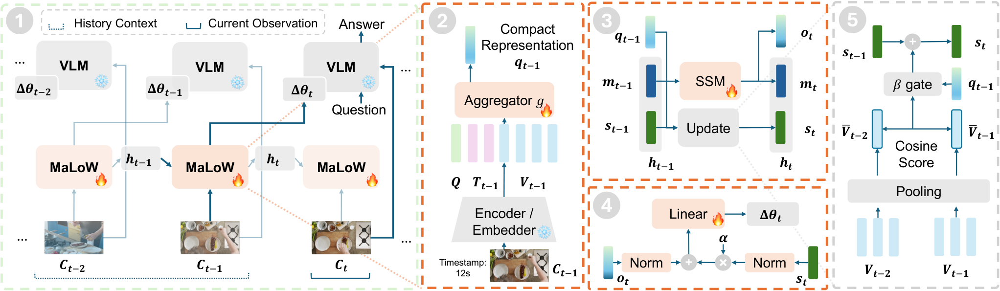

Paper Analysis
01 · The Task and the Meaning of Parameter Memory
流式视频问答要求模型同时理解眼前画面，并回答与较早事件有关的问题。保留全部历史 token 会使上下文与读取成本增长；只看短窗口则会丢失问题需要的证据。MaLoW 把历史放进适配器权重，回答时主要输入当前片段 C_t 和问题 I_t。输出是文本答案，不是深度、相机轨迹或实例地图。
LoRA 用两个低秩矩阵 A、B 表示某个线性层的权重增量，ΔW=BA。通常 LoRA 是训练后固定的参数；这里由另一个网络根据历史实时生成。超网络指“输出另一个网络参数的网络”，递归状态 h_t 则在视频块之间延续。基础 VLM 的 θ 保持冻结，生成的 Δθ_t 随观测变化。
因此，memory 不必表现为可检索 token 列表，也可以表现为改变当前计算的权重。固定状态尺寸限制的是表示容量，不意味着能够无损保存任意长视频；历史细节仍可能被后续信息覆盖或压缩掉。
Paper Analysis
02 · Reading the Original Architecture

Zhuoming Liu et al. · Original figure, unmodified · Copyright retained by the authors · Paper & Caption ↗
Figure 2 的左侧先区分历史 C_{t−1} 与当前 C_t：前一块更新 memory，生成的 Δθ_t 用于理解当前块。历史视觉特征与时间戳文本经过冻结编码器，再和可学习查询 Q 一起进入可训练聚合器。查询输出 q_{t−1} 是紧凑的块表示，不是对象实例槽位。
图中部将状态分成两部分。四层 DeltaNet 保留时序变化，输出 o_t；另一路将通过变化门控的块摘要累积到 s_t，以减少大量近似重复片段的影响。它们归一化后相加，再线性投影为目标层的 LoRA 因子。
聚合器采用四层、512 隐藏维度、8 个注意力头的 Transformer；每个基础解码层对应一个查询，生成器再为不同目标模块与秩分量输出矩阵因子。论文默认 rank 8，作用于 MLP 的 gate/up/down 和 attention 的 value 投影，具体目标随基础模型结构调整。
原图里的“global semantic”表示累积的视觉语言特征摘要，并没有像素级语义教师或分割监督。视觉相似性门控也不等于跨帧对象关联：两个同类对象、一次相机运动或光照变化，都可能影响该统计。
Paper Analysis
03 · Write, Read, and Temporal Ordering
下式将机制写成三个步骤：从上一块形成新状态；从状态生成适配器；带着适配器处理当前块。R 表示读出网络，α 控制累积摘要的相对幅度。基础模型读取历史的方式是使用改变后的映射，而不是把 h_t 当作额外文本 token。
教学例子：第一个片段出现一个短暂事件，第二个片段视角转移，第三个片段才问“之前发生了什么”。第三块作答时没有重新送入第一块的图像；只有前两块形成的 h_3 和 Δθ_3 能提供历史。若它们只留下粗略类别，回答可能保留事件大意却丢失精确对象或顺序。
在线阶段只做前向状态更新与参数生成，不在每次观测后运行优化器。因此它与测试时通过梯度下降修改模型参数不同。训练可用因果并行计算加速，部署可递归执行；两者都必须保持问题时刻之后的帧不进入当前答案。
(h_t, Δθ_t) = f(h_{t−1}, C_{t−1})
Δθ_t = R(RMSNorm(o_t) + α · RMSNorm(s_t))
answer_t = M(θ + Δθ_t; I_t, C_t)
ΔW_t = B_t A_tPaper Analysis
04 · Training and the Gradient Path
训练目标是答案 token 的交叉熵，加上生成 LoRA 因子的 L1 正则，论文系数为 0.01。基础 θ 冻结，但对基础模型前向计算仍需保留求导路径：答案误差对 Δθ_t 的导数，再传到读出网络、递归状态和历史聚合器。冻结权重不等于把该模块输出 detach。
以前面的三块例子说明：第三块回答错误，梯度首先调整“怎样根据状态生成有用权重”，再沿可微递归计算调整“怎样编码前两块”。实际可回传多远取决于训练序列与状态截断配置；不能仅凭在线结构图假定无限长度反向传播。
论文报告四张 H200、2,800 步、batch size 64 和 AdamW 学习率 8×10⁻⁵。MaLoW-Instruct 约 381K 问答来自约 56K 视频：先产生问题，再根据问题时刻之前的前缀生成答案并验证。问题生成阶段看完整视频，不等于模型推理时使用未来帧，但可能带来问题分布偏好。
关键点是历史通过下游问答目标学习，而不是监督 state 复原原图。对我们的重建任务，这启发的是“未来任务误差怎样回到历史形成”，并不意味着把答案损失换成语义损失就自动获得几何改善。
L = L_next-token + 0.01 · L_LoRA L_LoRA = (1 / |S|) Σ_s [mean(|A_s|) + mean(|B_s|)] L_answer,t → Δθ_t → R → h_t → historical aggregation
Paper Analysis
05 · What the Matched Baseline Actually Shows
Table 4 使用同一个 Qwen3.5-4B，对比完整上下文、最后 2 秒局部窗口和 MaLoW。下表列出 OVO-Bench 的三类分数，均越高越好。回溯问题更直接依赖旧信息；实时问题关注当前；前瞻问题要求根据已见前缀推断之后事件。
局部窗口的实时分数较高，但回溯分数低。MaLoW 相对局部窗口将回溯提高 11.9 个百分点，同时实时下降 0.4；相对完整上下文，回溯提高 2.4，但前瞻仍低 1.9。这个对照比不同基础模型之间的总榜更清楚地展示历史信息的用途。
该表采用 1 fps、最多 768 帧的设置，MaLoW-4B 额外训练参数约 235M。主结果中 Qwen3-VL-4B 版本使用最后 8 秒，不应把所有模型都写成“只看 2 秒”。和其他方法比较时，还需考虑训练数据、视觉分辨率与当前窗口差异。
| Qwen3.5-4B setting | Backward ↑ | Real-time ↑ | Forward ↑ | Average ↑ |
|---|---|---|---|---|
| Full context | 60.1 | 66.9 | 51.2 | 59.4 |
| Local window: 2 s | 50.6 | 75.1 | 39.3 | 55.1 |
| MaLoW | 62.5 | 74.7 | 49.3 | 62.2 |
Paper Analysis
06 · Which Part of the State Helps
附录组件消融支持时序状态与累积摘要的互补，但不是所有指标都同步提升。Table 11 中只用累积摘要时 OVO 得分 62.5、StreamingBench 70.9；只用 SSM 时为 62.4、72.8；二者结合为 64.2、72.7。SSM 对动态过程有帮助，累积摘要补足历史内容，但组合在 StreamingBench 略低于单独 SSM。
Table 12 进一步比较普通、加权和门控累积：EPM 历史记忆子项依次为 61.3、62.0、64.0。它支持减少冗余写入的价值，但不能把收益归因于显式对象语义，因为没有对象标签控制。上述消融使用训练子集，不能与完整训练主表直接做增量相减。
更大的 rank 也不保证更好。Table 10 中 rank 8 的平均分 69.2，rank 16 反而为 65.8。作者解释为可能过拟合；表格本身能证明的是当前训练配置下增加适配容量没有单调收益，不能单凭此确认具体原因。
Paper Analysis
07 · Long-Horizon Evidence and Runtime Boundaries
StreamArena-HR 包含 877 个问题、237 个视频，相关证据到问题的间隔中位数为 12.1 分钟。MaLoW 得分 22.8，AURA 为 21.4，VST 为 20.6；但 15–30 分钟组中 MaLoW 19.2，略低于 VST 的 19.6。超过 30 分钟组 MaLoW 也只有 15.7，长期细粒度记忆远未解决。
作者给出的失败例子很有信息量：32 分钟前出现的具体品牌被回答成泛称“饮料”；另一例需要回到原帧识别角落时钟，参数摘要不能替代精确帧检索。这说明压缩状态适合留下任务相关线索，却未提供可定位、可核查的原始证据库。
附录 Table 15 报告 Qwen3.5-9B 单次计时 152.89 ms，其中基础模型 prefill 与首 token 130.07 ms，其余约 22.82 ms。作者讨论重叠执行更新后，关键路径只增加 1.75 ms；这是调度分析，不能作为包含视频解码、预处理与完整回答生成的端到端耗时。
论文的 OVO/StreamingBench 评测采用因果前缀的并行实现。官方仓库也提供交互及固定间隔 rollout，但默认仍为 offline evaluator。模型可以递归在线运行，不代表每个表格都来自持续运行的实时系统。
Paper Analysis
08 · Implementation Questions and Transfer to Reconstruction
这里有一处值得对照代码的公式歧义：论文门控写成余弦相似度与 β 比较，附录则依据余弦距离 1−cos 选择 β=0.05。公开实现 temporal_weighting.py 明确先计算距离，再保留首块或距离 ≥ threshold 的块，并在同一视频内归一化为均匀权重。默认 threshold=0.05；这支持“变化较大才保留”的解释，不能照抄为 cos ≤ 0.05。该核查针对公开推理组件，不等于复现全部训练配置。
截至本次阅读，官方仓库提供模型与评测入口，README 将训练代码和数据标为待发布。因此本文关于训练梯度的说明基于论文计算图，不声称已经逐行验证完整训练实现。
与 LingBot-Map 的联系在于：固定历史预算下，下游误差可以训练历史如何影响未来计算。MaLoW 改变参数，LingBot-Map 保存 KV，两者的读取接口不同。直接将重建网络全部改为动态权重，会同时改变容量、计算和训练稳定性，难以单独验证语义的作用。
对现有写入前语义融合方案，更具体的启发是保持原有缓存接口，用后续几何损失训练历史形成，并比较有无语义、不同写入位置和等容量普通特征。MaLoW 没有给出语义改善几何的证据；可以借鉴任务驱动的状态训练，不能借用其问答增益作为重建结论。
Discussion
Reading Questions
Is this test-time training?
不是逐块梯度下降。推理通过超网络前向生成 LoRA；超网络本身在训练阶段学习。
Where does historical information enter the answer?
历史先进入递归状态，再转为低秩权重增量，改变当前 VLM 的内部映射。无需把全部旧帧作为当前输入。
Does semantic memory mean pixel-level supervision?
这里没有像素语义教师或实例 loss。所谓语义摘要来自视觉语言特征，不能与显式语言对齐的区域 memory 等同。
What is the strongest controlled result?
同一 Qwen3.5-4B 的完整上下文、局部窗口与 MaLoW 对照。它支持历史问答收益，同时保留前瞻任务未超过完整上下文的事实。
References
- Paper · Version 1 ↗
- Submission History ↗
- arXiv Distribution License ↗
- Official Repository ↗
- Official Project ↗
- Official Gate Implementation · Pinned Revision ↗
One original method figure is included for focused scholarly commentary. The arXiv record uses a non-exclusive distribution license, not a Creative Commons reuse license; copyright remains with the authors. No modifications.
Verified on 2026-10-20. Paper results refer to the linked versions. Repository references were checked on this date.